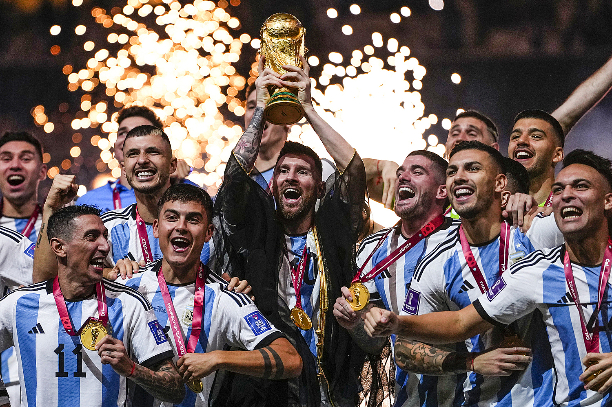

QATAR: Argentina hòa Pháp 3-3 sau hai hiệp phụ - trong trận đấu Lionel Messi lập cú đúp, Kylian Mbappe ghi hattrick, trước khi thắng luân lưu 4-2 ở chung kết World Cup 2022 ngày 18/12.
 Trước khi vỡ òa trong hạnh phúc, Lionel Messi và đồng đội liên tục bị số phận trêu đùa trong hai hiệp chính cũng như hiệp phụ. Argentina dẫn 2-0, rồi để Kylian Mbappe ghi liền hai bàn ở các phút 80 và 81, dù Pháp gần như không có cơ hội nào trước đó. Đến hiệp phụ, Messi giúp Argentina vượt lên nhưng Mbappe một lần nữa lập công, gỡ hòa 3-3. Dù tiếp tục tỏa sáng ở loạt luân lưu, Mbappe không phải người tận hưởng vinh quang sau cùng tại World Cup 2022. Thủ môn Emiliano Martinez chơi xuất sắc ở loạt đấu cân não, giúp Messi lần đầu giành Cup vàng thế giới.
Kỳ World Cup được xem như hay bậc nhất lịch sử chứng kiến cái kết không thể kịch tính hơn. Ở phút đấu cuối cùng trong hiệp phụ, Pháp đến gần bàn thắng quyết định, khi Kolo Muani đối mặt với Martinez trong thế trống trải. Pha cản phá xuất thần bằng chân của thủ môn Argentina giúp đại diện Nam Mỹ thoát thua, rồi mở ra cơ hội phản công sau đó. Nhưng ở cự ly hơn năm mét, Lautaro Martinez đánh đầu ra ngoài. Chỉ vài chục giây sau, Mbappe đột phá từ biên qua hai hậu vệ Argentina, có cơ hội thuận lợi trong cấm địa. Enzo Fernandez, cầu thủ trẻ hay nhất giải, là người ngăn cản siêu sao Pháp ghi bàn thứ tư trong trận chung kết.
Hai đội đưa người hâm mộ đi từ hết bất ngờ này đến bất ngờ khác trong cả trận. Không giống trận bán kết với Croatia, Argentina nhập cuộc vũ bão, dồn ép Pháp trong suốt hiệp một. Di Maria, một bất ngờ trong đội hình xuất phát khi đá cánh trái, chơi ấn tượng nhất trong 45 phút đầu. Tốc độ và sự khéo léo của cầu thủ 34 tuổi mở ra nhiều cơ hội cho Messi và đồng đội. Bước ngoặt đến ở phút 23, khi Di Maria bị Ousmane Dembele bị phạm lỗi trong cấm địa. Từ quả phạt đền, Messi dễ dàng đánh bại Lloris để mở tỷ số.
Pháp phản kháng yếu ớt sau bàn thua, và tiếp tục nếm trái đắng từ Di Maria ở phút 36. Messi lại ghi dấu ấn khi khởi xướng đường phản công bằng pha tỉa bóng ra biên phải cho Julian Alvarez. Tiền đạo Argentina chuyền một chạm cho MacAllister băng lên căng ngang vừa tầm để Di Maria dứt điểm đập đất hạ gục Lloris. Di Maria khóc ngay sau bàn nâng tỷ số lên 2-0, và đó không phải lần duy nhất anh khóc trong trận đấu với nhiều diễn biến cảm xúc.
Pháp thay Ousmane Dembele và Olivier Giroud ngay trong hiệp một, nhưng vẫn không cải thiện được thế trận. Phải đến phút 71, các học trò Deschamps mới lần đầu dứt điểm, từ cú sút xa của Kylian Mbappe. Trong tình cảnh gần như vô vọng, Pháp nhận được món quà từ Nicolas Otamendi. Trung vệ Argentina xử lý lóng ngóng, để Kolo Muani bứt tốc vượt lên. Otamendi phạm lỗi trong cấm địa, mở ra cơ hội để Mbappe đá phạt đền rút ngắn tỷ số.
Khi Di Maria - cầu thủ bị thay từ phút 64 - bắt đầu khóc trong khu kỹ thuật vì lo lắng, Mbappe một lần nữa trừng phạt Argentina bằng khoảnh khắc của bản lĩnh và đẳng cấp. Một phút sau bàn gỡ 1-2, tiền đạo 23 tuổi san bằng tỷ số bằng pha vô-lê bóng sống ở rìa vòng cấm. Sự tàn nhẫn và lạnh lùng của Mbappe khiến Messi và đồng đội thẫn thờ. Argentina, ở những phút cuối của hai hiệp chính, suýt nữa thua bàn thứ ba trong bối cảnh Pháp càng đá càng hưng phấn.